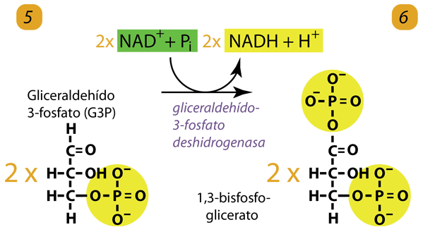
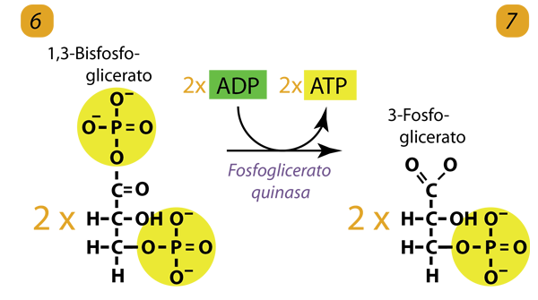
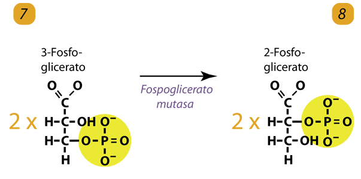
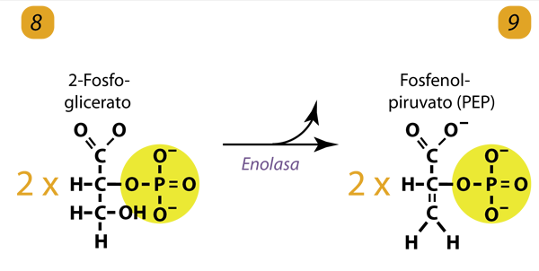
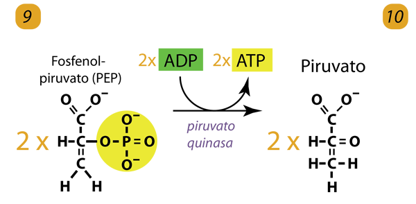

A partir de este paso, la glucólisis se convierte en un proceso de generación de energía donde se produce ATP. Al comienzo de este proceso, el G3P se convierte en 1,3-bisfosfoglicerato. Esto implica la adición de otro fosfato. En este proceso, la molécula de adehído se convierte en un ácido. Este proceso de conversión del aldehído en ácido es una oxidación. En el proceso, la molécula que se oxida pierde dos electrones y le da esos dos electrones a NAD+, que los acepta más un protón para producir NADH. Teníamos dos moléculas de G3P, por lo que obtenemos dos moléculas de 1,3 bisfosfoglicerato y ganamos dos NADH de esta reacción. Estos se utilizarán en la cadena de transporte de electrones para proporcionar un pago de energía mucho mayor. El grupo ácido creado por la reacción de oxidación da un fosfato al 1,3 bisfosfoglicerato. Esta adición de fosfato es diferente a las vistas hasta ahora que requerían energía ATP. Este fosfato no proviene del ATP, sino que es un fosfato libre agregado al ácido. La energía para hacer esto proviene de la oxidación del mismo paso. Es por eso que no necesitamos energía ATP para agregar el fosfato. La salida neta de este paso es dos 1,3 bisfosfogliceratos y dos NADH.

Este paso comienza la parte de la glucólisis donde se produce ATP. Primero, se transfiere un fosfato de cada uno de los dos 1,3 bisfosfogliceratos para agregarlo a ADP y producir ATP. Esto deja dos moléculas de 3-fosfoglicerato.

Las dos moléculas de 3-fosfoglicerato se reorganizan para producir 2-fosfoglicerato.

Las dos moléculas de 2-fosfoglicerato con la acción de la enzima enolasa forman dos moléculas de fosfoenilpiruvato (PEP). El PEP es el sustrato para el paso final de la glucólisis.

Con la ayuda de la enzima piruvato quinasa, el paso final produce dos ATP y dos moléculas de piruvato. Queda suficiente energía para casi producir dos ATP más, pero como se queda corta, esta energía se emite en forma de calor.